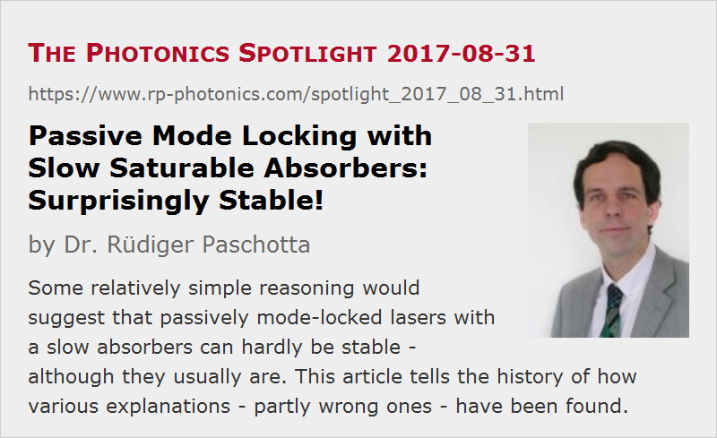

Passive Mode Locking with Slow Saturable Absorbers: Surprisingly Stable!
Posted on 2017-08-31 as a part of the Photonics Spotlight (available as e-mail newsletter!)
Permanent link: https://www.rp-photonics.com/spotlight_2017_08_31.html
Author: Dr. Rüdiger Paschotta, RP Photonics Consulting GmbH
Abstract: Some relatively simple reasoning would suggest that passively mode-locked lasers with a slow absorbers can hardly be stable - although they usually are. This article tells the history of how various explanations - partly wrong ones - have been found.
Ref.: R. Paschotta and U. Keller, “Passive mode locking with slow saturable absorbers”, Appl. Phys. B 73 (7), 653 (2001)

Today, I cover a relatively specialized subject in the area of ultrafast laser physics, which however is important for many such lasers and also gives interesting insight into the curious ways in which science often progresses.
The basic principle of passive mode locking is not overly difficult to understand. Essentially, a saturable absorber in the laser resonator leads to lower power losses for the intense peak of a circulating ultrashort pulse, compared with losses for light with low optical power hitting the absorber at other times. That mechanism favors the pulse peak and can therefore be imagined to form and stabilize a rather short pulse.
How Can Such Lasers be Stable?
Looking into the details, one will quickly come across difficult aspects, however. One of them is related to the fact that many absorbers used for mode locking of common ultrafast lasers are so-called slow absorbers, which means that they have a recovery time which is substantially longer than the pulse duration. That is often the case for lasers which are mode-locked with semiconductor saturable absorber mirrors (SESAMs), for example, particularly in the femtosecond pulse duration regime. Here, the SESAM's recovery time is often about an order of magnitude longer than the pulse duration. Already in the 1990s (if not earlier), some researchers realized a potentially serious technical problem with slow absorbers:
- Consider the circulating pulse in a time frame moving together with the pulse peak. At the temporal position of the pulse peak, the saturable absorption is still falling due to increasing saturation of the absorber. Once the optical power has fallen to a rather small value, the absorption is still mostly saturated – at a value, which is substantially below the average absorption during the time of the pulse. (Note that the absorber is usually in the ground state at the beginning of the pulse, and causes a high loss for the leading wing.) Only much later, the absorption fully recovers to its initial high value.
- In the steady state, the laser gain per resonator round-trip must be saturated to a level such that the net gain of the pulse per round trip is exactly zero, because otherwise the pulse energy would increase or decrease with time.
- Combining those insights, we find that there is negative net gain for the leading wing of the pulse, and positive net gain directly after the pulse.
- If you have any noise, for example, directly behind the pulse, and that noise is constantly subject to a positive net gain, you should expect it to grow exponentially with time, until it finally destabilizes the pulse.
In conclusion, it should not be possible to obtain stable passive mode locking with a slow saturable absorber!
Well, that finding was actually not consistent with common experimental experience – such lasers are often found to be absolutely stable, producing nice pulses without any noise issue on the trailing part. Therefore, researchers have searched for explanations for that apparent discrepancy.
Soliton Mode Locking
An early root of reasoning was that some additional physical mechanisms could have a stabilizing effect. One such mechanism could indeed be identified for the case of soliton mode locked lasers (F. X. Kärtner et al., “Stabilization of solitonlike pulses with a slow saturable absorber”, Opt. Lett. 20 (1), 16 (1995)); I briefly describe it in the following:
- The circulating pulse experiences substantial effects of chromatic dispersion and the Kerr nonlinearity. These two essentially cancel each other for fundamental soliton pulses.
- Any noise just behind the circulating pulse is also subject to chromatic dispersion, but not much to the nonlinearity, since it has low intensity. Therefore, chromatic dispersion is not balanced by nonlinearity. As a consequence, the noise stuff is temporally broadening more and more. That gives it only a finite time to be amplified by the above mentioned positive net gain.
Well, that's plausible, but works of course only for lasers with soliton effects.
Gain Saturation
Others have considered lasers where not only the absorption, but also the laser gain itself exhibits substantial saturation. In that case, positive net gain behind the pulse may actually be avoided. Such a mechanism, however, does not work in solid-state lasers, where the pulse energy is typically orders of magnitude below the gain saturation energy.
Something Was Missing!
Curiously, people seemed to ignore at that time the actually well known fact that even very simple picosecond solid-state lasers, not having substantial effects of chromatic dispersion and nonlinearity on the pulses, nor any significant gain saturation during a pulse, are also stable. So obviously there must be some still unidentified stabilizing effect even in such lasers. However, nothing seemed to happen for quite a few years. Maybe some people realized the problem but simply couldn't find an explanation.
The Solution
I came across this issue during my time as a group leader in the ETH Zurich. In my group, we had various lasers to which the soliton-based explanation could clearly not be applied. Furthermore, I had developed numerical models for mode-locked lasers which also confirmed the stability despite clearly positive net gain behind the pulse. When you find something like that in a simple model, it becomes much easier to find the reason, because such a physical model is, as I like to say, transparent: you can inspect any relevant quantity, while it is often very difficult to measure such things in experiments.
First I checked whether the stability might be a numerical artifact. You can imagine, for example, that if you had exactly zero intensity after the pulse in a numerical model, application of an arbitrarily high gain would still leave it at zero. However, that concern could quickly be ruled out; that is not exactly zero intensity after the pulse, and even adding some substantial numerical noise in every resonator round trip does not remove the stability.
A solution of the problem required some physical reasoning, which finally led to the following explanation:
- Because the saturable absorber attenuates the leading wing of the pulse more than the trailing wing, it shifts the temporal “center of gravity” of the pulse to the back. The same thing does not happen to any noise behind the pulse – to the contrary, that can only be shifted in the opposite direction, since the absorption is slowly recovering there.
- Therefore, the pulse is constantly shifted into the noise behind it, so that that noise has only a finite time to be amplified: it is constantly wiped up by the pulse itself, and can therefore not grow without limits!
Based on that idea, I could then do some simple analytical calculations, particularly for estimating the limits of stability. I found that stability is indeed lost when the recovery time of the absorber gets too long; that stability limit actually depends on how strongly the absorber is saturated. Such stability limits could be verified with numerical experiments. Such investigations led to the confidence that the finally discovered mechanism is really what stabilizes such simple lasers. The results have been published in Appl. Phys. B 73 (7), 653 (2001).
Of course, the described mechanism also works in soliton mode-locked lasers; this means that the previous implicit assumption that the other mentioned mechanism is solely responsible for stability in such lasers, is wrong. Indeed, some soliton mode locked lasers would be stable even entirely without that other mechanism.
Wrong Assumptions Lead to Wrong Results
By the way, there have been some theoretical papers which are entirely wrong. They started with the wrong postulation that stable mode locking is possible only when there is no positive net gain behind the pulse, and derived various consequences from that wrong assumption. That's now for the garbage bin.
There are actually researchers in the field – even well established ones – who still have not recognized the simple stabilizing mechanism and therefore claim in scientific talks e.g. that soliton mode locking is necessary to obtain stability in passively mode-locked femtosecond lasers.
Conclusions
Some conclusions should be drawn:
- When you have an apparent explanation for some surprising phenomenon, don't take it for granted that it is the only possible explanation, or at least the dominant reason. For example, check whether it works in some representative cases. (People are often just too keen to see the problem apparently going away!)
- Numerical models can be extremely helpful for investigating curious phenomena – you can quickly try out various changes to the system, closely inspect all the internal workings, etc. Experiments are often more troublesome to set up, give only limited information, and their results are easily misinterpreted. By the way, when playing with numerical models, you can also get essential new ideas.
- If some leading figures in the field tell you something, it may still be wrong.
- You should also question the common opinion that theoretical results are generally of lower value than experimental ones. (At conferences, for example, you often see theoretical papers making it only to the poster session, because they score lower than experimental demonstrations, even if you can learn quite little from the latter.) For example, how much do you learn from ten reports on slightly modified lasers compared with a single paper correcting the understanding of certain physical mechanisms? My opinion is clearly that understanding matters most in science, and that it is often underrated.
This article is a posting of the Photonics Spotlight, authored by Dr. Rüdiger Paschotta. You may link to this page and cite it, because its location is permanent. See also the RP Photonics Encyclopedia.
Note that you can also receive the articles in the form of a newsletter or with an RSS feed.
Questions and Comments from Users
Here you can submit questions and comments. As far as they get accepted by the author, they will appear above this paragraph together with the author’s answer. The author will decide on acceptance based on certain criteria. Essentially, the issue must be of sufficiently broad interest.
Please do not enter personal data here; we would otherwise delete it soon. (See also our privacy declaration.) If you wish to receive personal feedback or consultancy from the author, please contact him e.g. via e-mail.
By submitting the information, you give your consent to the potential publication of your inputs on our website according to our rules. (If you later retract your consent, we will delete those inputs.) As your inputs are first reviewed by the author, they may be published with some delay.
|  |
If you like this page, please share the link with your friends and colleagues, e.g. via social media:
These sharing buttons are implemented in a privacy-friendly way!